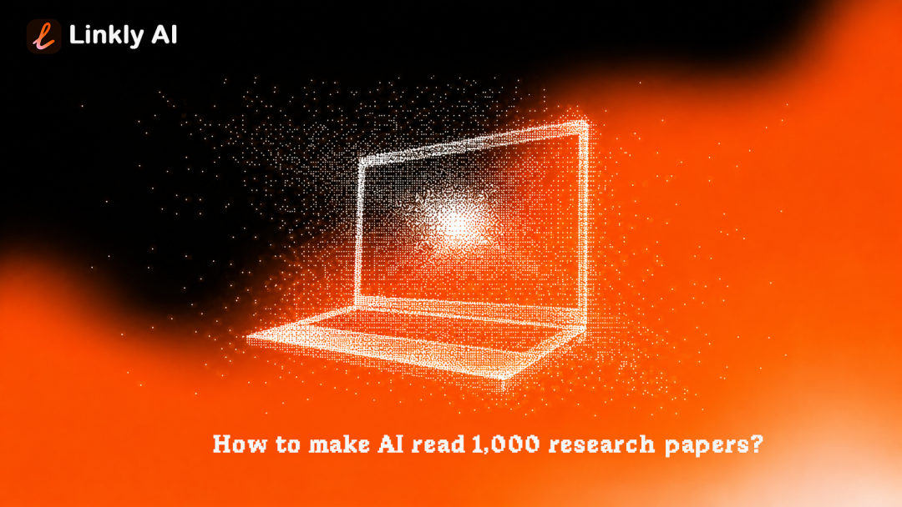
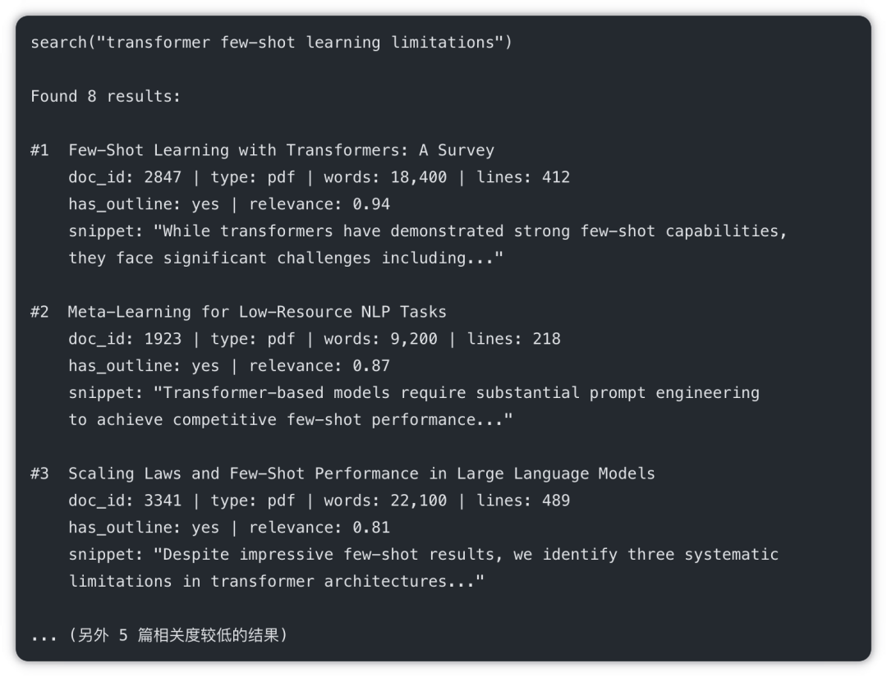
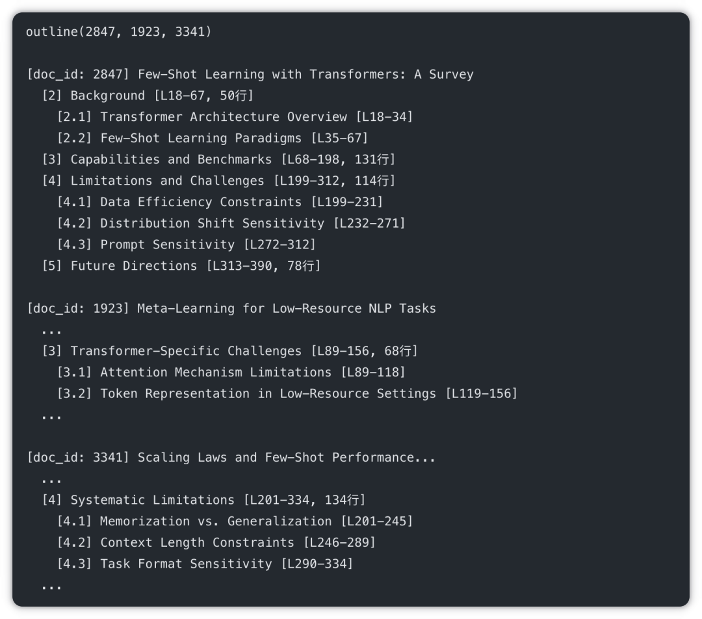

打开你的 Zotero，随便翻翻。
1000 篇文献，PDF 都在本地，元数据整整齐齐，标签也打好了。你花了好几年积累这个库。
现在你要写一篇关于大语言模型在代码生成领域的综述。你打开 Google Scholar，开始搜索。
为什么不去 Zotero 里找？因为你不记得自己下载过哪些相关的东西。Zotero 是文献管理工具，它管理的是标题、作者、年份——而不是论文的内容。你没法问它”哪篇文献讨论了 few-shot prompting 对代码生成的影响”，它只能帮你按字段过滤。
这是每一个有大型文献库的研究者都会遇到的问题：拥有大量资料，却等于没有。
传统工作流的四道墙
研究工作大致分四个阶段，每个阶段都有自己的摩擦：
文献检索：你不记得已经下载了什么，重复在 Google Scholar、Semantic Scholar 上找。找到之后才发现，三个月前就已经下载过了。
阅读筛选：即使找到了相关文献，也不知道哪一篇的哪个章节讲了你要的那个具体问题。只能打开 PDF，ctrl+F，或者从头扫一遍。
笔记整理：笔记分散在 Notion、Zotero 笔记、各种 PDF 批注里。没有统一的视角。
综述写作：写某一个论点时，你知道有哪几篇支持，但引用需要手动翻找原文，确认原话、页码、论证逻辑。
四道墙叠加起来，文献综述的写作效率非常低——不是因为你不够努力，而是工具本身的结构性限制。
换一种思路：让 AI 直接在文献里找
Linkly AI 的核心想法是：与其把文献筛选后丢给 AI，不如让 AI 像研究员一样自由的翻阅你的文件柜。
它为每篇文献建立一份结构化”名片”（Outline Index），让 AI 可以用三个工具渐进式访问你的本地文献库：
• search — 搜索文献，返回相关文件列表和摘要
• outline — 查看某篇文献的章节结构，快速定位相关段落
• read — 精读指定章节的原文
通过 MCP 协议，Claude、Cursor 等 AI 工具可以直接调用这三个工具。你只需要问问题，AI 自己决定搜什么、读什么、读多少。
关于这套技术的设计原理，可以参考 Outlines Index 技术原理。
建立你的文献库：5 分钟配置
第一步：导出 PDF 到统一文件夹
在 Zotero 中，可以批量将附件导出或直接找到存储目录（Zotero 默认将 PDF 存在 ~/Zotero/storage/ 下，每篇文献一个子文件夹）。建议将所有 PDF 整理到一个统一目录，例如 ~/research-papers/。
第二步：在 Linkly AI 中建立索引
打开 Linkly AI，选择你的文献文件夹，开始建立索引。后台会自动完成：
• BM25 全文索引（1-3 分钟，完成后立即可用关键词搜索）
• Outline 索引（为每篇 PDF 提取章节结构）
• 向量语义索引（完成后支持跨语言语义搜索）
第三步：在 AI 助手中配置 MCP
只需要向你的 Agent 输入一句指令，5 分钟即可完成配置。完成后，AI 助手就能访问你的本地文献库了。
验证是否成功：在 AI 助手 里直接问 “在我的电脑中检索Transformer注意机制的知识”，如果返回了你文献库中相关文献的列表，就说明配置成功了。
真实对话示例
配置好之后，这是实际使用时的体验。
你：这批文献里有没有讨论 Transformer 在小样本学习场景下的局限性？
AI 助手（开始操作）：
首先搜索相关文献：

最相关的是前三篇，我来查看它们的章节结构：

第一篇的第 4 章和第三篇的第 4 章直接讨论了局限性，我来精读这两个章节：
AI 助手（给出回答）：
根据你文献库中的三篇文献，关于 Transformer 在小样本学习场景下的局限性，主要集中在以下几点：
1. 对提示词的敏感性（Prompt Sensitivity）
[Few-Shot Learning with Transformers, §4.3] 发现，同一个任务使用不同格式的 few-shot 示例，准确率差异可达 15-30%。这意味着 few-shot 性能高度依赖 prompt 设计，可复现性较差。
2. 数据效率约束（Data Efficiency）
[同上, §4.1] 指出，尽管 Transformer 可以从少量示例中学习，但其数据效率远低于专门为小样本设计的方法（如 MAML），在极端低资源场景（1-5 个样本）下尤为明显。
3. 分布偏移敏感性
[Scaling Laws, §4.1] 的实验表明，Transformer 在 few-shot 场景下更倾向于依赖训练数据的模式记忆，而非真正的泛化能力，导致在分布偏移的测试集上性能下滑明显。
你是否需要我进一步对比这三篇文献在这些问题上的具体实验设置？
整个过程，AI 助手 自主完成了三次工具调用：search → outline（三篇并行） → read（两篇目标章节）。你只问了一个问题，它找到了有精确来源的答案。
进阶用法
掌握了基本用法后，可以做更复杂的事情。
跨文献对比
AI 助手 会对每篇文献调用 outline 找到评价局限性的章节，然后逐一 read，最后综合对比。
方法论提取
AI 助手 会先 search，对匹配的文献逐一 outline 找到实验部分，再 read 提取具体参数。
综述辅助写作
这是最有价值的用法。AI 助手 会主动搜索、阅读、整合，给你一个有真实来源的初稿，而不是凭通用知识编造引用。
一个重要说明
这套工作流的核心价值在于：AI 助手 读的是你真实存在的文献，引用的是你本地文件里的原话。 它不会凭空捏造引用，因为它有真实的文本可以读。
这和直接让 AI 助手 帮你写综述有本质区别——后者往往会出现虚假引用（“幻觉”），因为它没有文献原文可以查证。
当然，AI 助手 的摘要和总结仍然可能有误差，最终引用前建议回到原文核实关键论点。
不只是学术研究
最后值得一提：这套工作流不只适用于学术文献。
任何需要管理大量参考资料的场景都适用：
• 律师：案例库、法规文本、合同模板
• 记者：采访录音转写、行业报告、背景资料
• 咨询师：行业研究报告、客户历史文件、方法论文档
• 产品经理：竞品分析、用户调研报告、内部文档
本质上，这套工作流解决的是同一个问题：你有大量已有资料，但每次需要的时候还是要重新找。
往期推荐